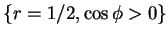
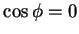
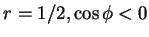
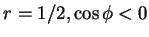
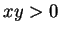
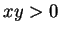

Next: Conclusions
Up: Spherical enclosures
Previous: Flow structure to first
Contents
Overall vapour and energy transfer rates
The definition of the Sherwood number for the cuboid, (6.21),
is here modified for the sphere:
The net flux through the hemispherical surface
 is
 |
(8.77) |
which is equal to the net flux through the disk,  (i.e. the  plane) or the other hemispherical surface:
. The Sherwood number is averaged by dividing the common
net flux through these surfaces by the projection of their area in the
plane) or the other hemispherical surface:
. The Sherwood number is averaged by dividing the common
net flux through these surfaces by the projection of their area in the
 -plane,
-plane,
thus
To first order in Gr,
The first order correction to the mean Sherwood number vanishes because  is an odd
function of
is an odd
function of  . The increased diffusion in the quadrants 
is balanced by the lower rate in the other two quadrants. The first order
correction to the Sherwood number may also have been expected to vanish
from more general symmetry considerations:
. The increased diffusion in the quadrants 
is balanced by the lower rate in the other two quadrants. The first order
correction to the Sherwood number may also have been expected to vanish
from more general symmetry considerations:
 should be an even
function of
should be an even
function of
 (§2.6.3).
(§2.6.3).
The results for the energy transfer rate are completely analogous.
Next: Conclusions
Up: Spherical enclosures
Previous: Flow structure to first
Contents
Geordie McBain
2001-01-27